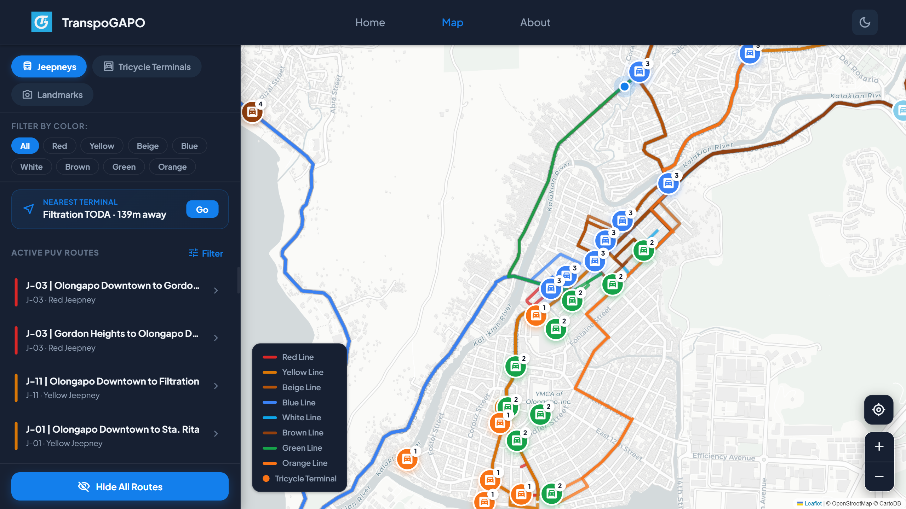

Ongoing
Web · GIS / Mapping
OSRM
Leaflet.js
Firebase
NoSQL
TranspoGAPO
A web-based PUV route mapping and terminal locator system for Olongapo City. Defined system requirements and led QA to keep usability and technical delivery aligned.
person
Role: Software Engineer Intern — QA & Requirements Engineering
Visit Project arrow_forward